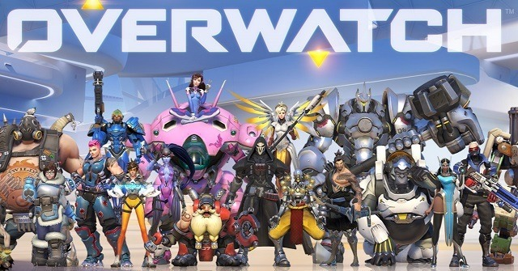
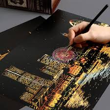

유튜브는 전 세계 최대 무료 동영상 공유 사이트로, 사용자가 영상을 시청· 업로드 · 공유할 수 있다.
사회적 영향
유튜브가 문을 열기 이전에는 일반 컴퓨터 사용자들이 온라인에 동영상을 올려 다른 사람들에게 보여주기 위한 쉬운 방법이 많지 않았다. 유튜브는 사용하기 쉬운 환경을 강점으로 컴퓨터를 사용하는 누구나 동영상을 올릴 수 있도록 해 몇 분 안에 수백만 명이 볼 수 있도록 하였고, 유튜브에서 다루는 넓은 범위의 주제로 비디오 공유를 인터넷 문화의 중요한 한 부분으로 자리잡게 했다.
이를테면 2006년에는 전기 기타로 캐논 변주곡을 연주한 동영상이 'funtwo'라는 사용자명을 사용하는 누군가가 유튜브에 올렸고, 즉시 많은 방문자가 이 비디오를 보기 위해 유튜브를 찾았다. 나중에 뉴욕 타임스는 그 해 8월 27일, 연주에 대한 극찬과 함께 이 동영상에서 나오는 이가 23살 대한민국에 사는 무명 기타리스트 임정현이라는 것을 알렸다.
유튜브 접속 차단 및 제한
2006년 12월 3일부터 이란에서는 다른 몇몇 사이트와 함께 유튜브 접속을 차단했다.
2007년 3월 6일 터키에서도 국부(國父)인 무스타파 케말 아타튀르크를 모독하는 동영상이 게재되었다는 까닭에 접속 차단과 해제가 거듭되었으며 현재는 해제되어 있다.
2007년에 태국에서 왕을 모독하는 것이 동영상에 게재되었다는 까닭에 모든 사람들이(유튜브 사용자) 한 때 차단이 되었다가 4월에 해제되었다.
2008년 3월 16일, 중화인민공화국(중국) 정부는 유튜브에 티베트 시위 장면이 담긴 동영상 십여 편이 올라온 뒤 중화인민공화국에서의 유튜브 접속을 차단했다. 현재까지도 중국에서는 유튜브 접속이 차단되어 있다. 다만 IP 변경 시에는 접속이 가능하므로 완전 차단은 아니다.
2009년 4월 9일, 유튜브는 대한민국의 인터넷 실명제와 관련하여 국가를 '한국'으로 설정해둔 사용자에 한해 동영상/댓글 업로드 기능을 자발적으로 제한하기로 했다. 그러나 나라를 전 세계를 이용하면 동영상/댓글 업로드 기능을 할 수 있다. 인터넷 실명제가 위헌 판정을 받은 2012년 9월 6일 이후, 국가를 '한국'으로 설정으로 해도 동영상/댓글 업로드를 할 수 있게 되었다.

오버워치는 블리자드 엔터테인먼트가 개발하고 배급하는 다중 사용자 1인칭 슈팅 게임이다. 2016년 5월 24일 마이크로소프트 윈도우, 플레이스테이션 4, 엑스박스 원으로 출시하였다. 6대 6 분대 전투 방식이다. 플레이어는 원하는 영웅 하나를 골라 전투에 참여한다. 영웅들은 역할이 공격, 돌격, 지원, 이렇게 셋으로 나뉜다. 팀은 다같이 협동하여 거점을 탈환 또는 사수하거나, 화물을 제한 시간 안에 목표 지점까지 호위하거나, 적을 모조리 사살해야 한다.
배틀그라운드는 본인을 포함해 한 번에 최대 100명의 플레이어와 전투를 벌이는 배틀 로얄 형식의 슈팅 비디오 게임이다.광활한 전장에 떨어진 100명의 플레이어들이 생존을 위해 싸우게 된다. 배틀로얄에 참가하게 된 플레이어들은 생존 전략과 기술을 활용해 전장의 최후 1인을 위해 경쟁하게 된다.

경질의 두터운 종이판에 미세한 특수 백색 도토를 바르고, 마른 후에 흑색 잉크를 칠한 판, 또는 그 판에 그린 흑백의 판화
표면을 예리한 칼이나 드라이포인트로 찍거나 긁어서 희게 나타난 부분과 남은 검은 부분으로 표현한다. 백색의 예리한 선이나 섬세한 점을 성기게도 하고 빽빽하게도 하여 섬세한 시각화가 가능하다. 신문 ·잡지광고 ·다이렉트메일 등에 사용되며, 아트지가 좋으나 철판으로 질이 낮은 종이 등에 인쇄해도 흑백의 대비가 강하게 나타나며 미세한 부분도 명쾌하게 재현할 수 있어 더욱 효과적이다.